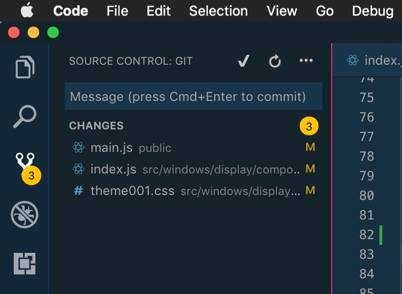

99% of articles and tutorials about Git will tell you that Git is super important because it helps you with collaboration. Features and bug fixes can be broken out into branches. Other developers can pick or be assigned issues to work on. And, when their work is done, it can be merged back into some master code-base.
Where I work we have a pretty small development team. :cough:. Well, it's just me right now. Me, a second-career, self-taught, remote developer. I dream of the day that we have more developers. The idea of assigning a bug to another developer sounds about as great as eating a strawberry cupcake on a unicorn prancing over a rainbow! But, low, there is nobody else here. So why would I need to go through all of the trouble of using Git! I have no-one collaborate with, and if Git is only good for collaboration, then it's kinda worthless.
Or so I thought.
It turns out that Git is much more than collaboration! As a solo, Git is great at keeping version history and keeping track of progress.
Only recently have I started to pick up this superpower. It took a bit of a mental shift to get here. Git is really difficult to understand. While the benefits of Git are incredible, the headaches that Git can cause can be detrimental! If you mess something up you can lose weeks worth of work. But, I think I finally have a methodology that works. In this post I want to share a few tips that I have picked up along the way that may help when it comes to using Git as a solo-developer.
Use an "issue tracker"
I'll go into my process in a different post, but I think this was key for me - use an issue tracker as your todo list. Personally I use Gitlab (since that is where I host my projects) but you can use Github, BitBucket, Asana, Wunderlist (RIP), a leather-bound Moleskin (hipsters represent), or whatever. The idea is to write down every feature or bug that needs to get fixed, no matter the size or time it will take to solve the problem.
Every Issue gets a unique issue number
I find it useful to have a unique issue number associated with the issue. The main reason is that you can refer to a feature or bug later by it's ID. If you're using GitLab or Github then you can reference this ID directly in comments and commits. But one of my favorite things is that if you use the issue number to prefix your branch name, these tools really shine. You can check off issues, reference others, and do other crazy voodoo, all because your issues have a unique number!
Work with smaller features/bugs
Another key is to separate the key problems that your solving into smaller parts and turn those into issues. A feature like "Redesign UI" is way too large of a task. Instead, break it down into "Top-nav layout", "Update button colors", and "Add this month's trendy image slider". This helps in several ways:
- It helps you think through and start to solve tasks before you get to coding. Simpler problems = less cognitive overload = you to move faster = 🤓.
- It helps fight against scope-creep. Since that feature has already been defined, new ideas need to go somewhere else. Later you may think, "Oh, I should also add a testimonial section to the homepage." Great… that is a new issue. Don't even think about adding that to an existing feature.
- Smaller features means you to check off issues rapidly, giving you a boost of confidence. There is nothing more disparaging than being 2 weeks into a massive feature, drowning in loneliness. Checking off issues makes you feel like you can conquer the next one. ✔✔✔✔✔
- Seeing all of the little steps helps more accurately scope timelines. If you know each of the four tasks will take 30 minutes, you can assume your timeline is 2 hours, give or take. Quoting time on a larger task is like a carnival game - you might win the teddy bear, or you might shoot your eye out.
Commit frequently
Don't be afraid of commit-ment. I use to feel like I had to be happy or done with a piece of code in order to commit it. Now I realize that this is more power in committing frequently. If you're going down a path that you realize is totally wrong, you can go back in time to before that mistake. And, since I can't tell when future-me is going to want to go back in time, I commit frequently.
Set up some aliases
Since Git is a command-line tool and I am terrible at typing, I let the computer help me out. I have my terminal setup using Oh-My-ZSH, which includes some handy aliases. Here are some of my favorites:
| Alias | Command |
|---|---|
| gaa | git add --all |
| gc | git commit -v |
| gp | git push |
| gl | git pull |
| gcb | git checkout -b |
| gcd | git checkout develop |
| gpsup | git push --set-upstream origin $(current_branch) |
Use VS Code
Microsoft VS Code has a ton of tools that help when it comes to developing with Git. Being a visual learner, and a novice at best when it comes to Git, VS Code gives me the confidence to push commit.
First, if you're current project has a repo in it, it will automatically keep track of all the changed that need staged. There is even a whole panel devoted to it! This helps because I can always see what I've changed, and it reminds me to commit - I don't want this list to get too long! You commit right here, too! I find this easier to understand and less error prone than using the command-line. I can see exactly which files are staged, write out my message, and I don't have to remember to -m my message or :wq to exit Vim (or is it :qw?).

There are also a few plugins that really make VS Code shine. I use:
- Git History: I use it to see diffs in my code (I swear I have zero short term memory).
- GitLab Workflow: I use this to to create merge requests.
Not having to leave my code editor helps me stay in the zone, commit quickly, and then get to the next commit. Bing, bang, boop!
I'll go over my particular workflow in another post, and show you specifically how I use Git not only as my code repository, but also my task list. Stay tuned!